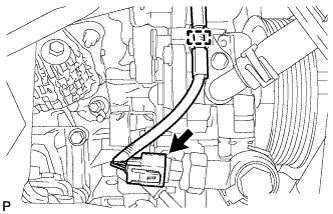
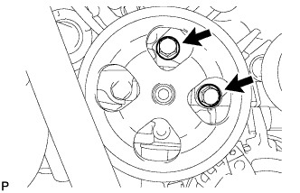
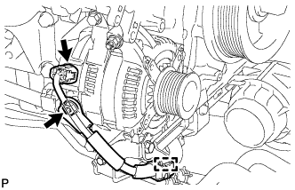
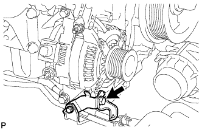
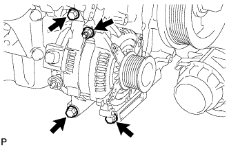

GENERATOR > REMOVAL |
| 1. DISCONNECT CABLE FROM NEGATIVE BATTERY TERMINAL |
| Condition | Waiting Time |
| Vehicle enrolled in G-BOOK system | 6 minutes |
| Vehicle not enrolled in G-BOOK system | 1 minute |
| 2. REMOVE RADIATOR ASSEMBLY |
Remove the radiator assembly (Click here).
| 3. REMOVE AIR CLEANER CAP AND HOSE |
 |
Disconnect the mass air flow meter connector, No. 1 air hose and No. 2 ventilation hose and detach the wire harness clamp.
Loosen the hose clamp.
Detach the 4 clamps and remove the air cleaner cap and hose.
| 4. REMOVE AIR CLEANER FILTER ELEMENT SUB-ASSEMBLY |
| 5. REMOVE AIR CLEANER CASE SUB-ASSEMBLY |
 |
Remove the 3 bolts and air cleaner case.
| 6. REMOVE FRONT FENDER APRON SEAL RH |
Remove the 4 clips and front fender apron seal RH.
| 7. DISCONNECT VANE PUMP ASSEMBLY |
|  |
Detach the clamp and disconnect the connector.
|  |
Remove the 2 bolts and disconnect the vane pump.
| 8. REMOVE GENERATOR ASSEMBLY |
 |
Remove the bolt and disconnect the No. 2 return tube bracket.
|  |
Disconnect the generator connector.
Remove the terminal cap.
Remove the nut and disconnect the generator wire.
Detach the generator wire.
|  |
Remove the bolt and disconnect the wire harness bracket from the generator.
|  |
Remove the 3 bolts, nut and generator.